Product Development Engineer specializing in parametric design, medical device engineering, and rapid prototyping for real-world deployment.
I'm a mechanical engineer with a BS from Auburn University's Samuel Ginn College of Engineering and a minor in Business, graduating with a 3.52 GPA.
Currently serving as Product Development Engineer at XO Armor Technologies, working directly with clinicians to design 3D-printed orthotic systems deployed at the point of care — including test rig design, materials validation, customer support, and intern management.
I also founded Easy Prints LLC, an e-commerce venture turning 3D scan data into personalized consumer products. I believe the best engineers understand not just how to build things, but how to get them into people's hands.
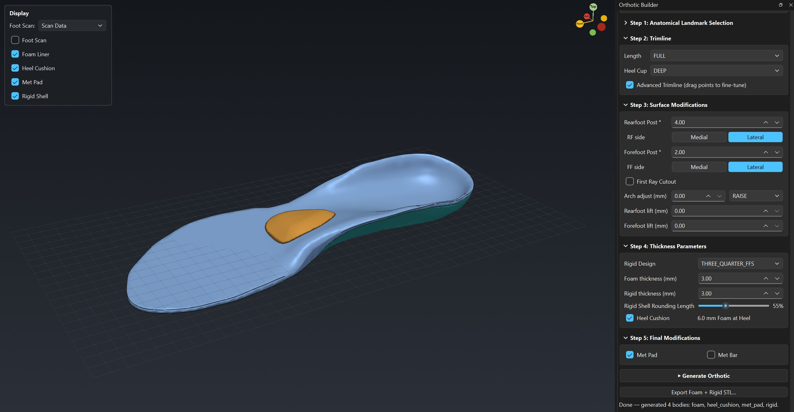
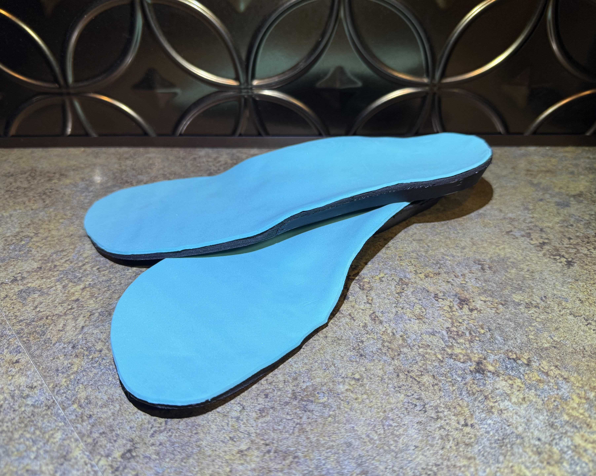
Developed a custom, scan-driven dual-material orthotic in direct collaboration with a clinician — integrating 15+ clinical modifications directly into the print to reduce post-processing to top-cover application only — iterated through clinical feedback and deployed as 300+ delivered pairs at the point of care.
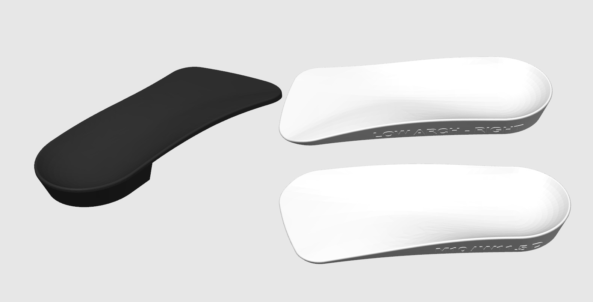
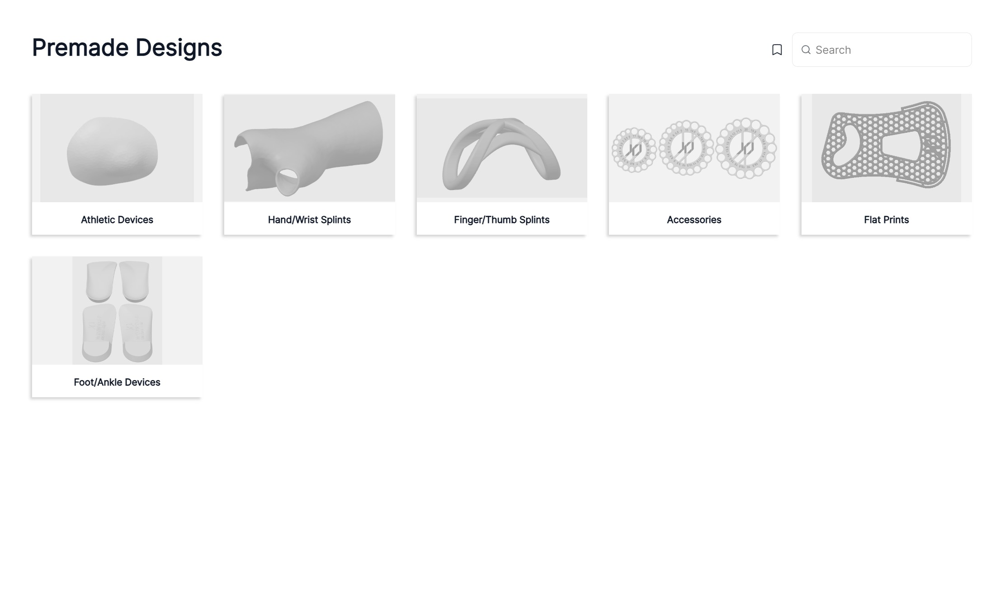
Developed automated workflows to generate and maintain a 5,000+ variant catalog of premade 3D-printable medical and athletic devices — built on a structured database enabling automated batch updates to customer-facing software.
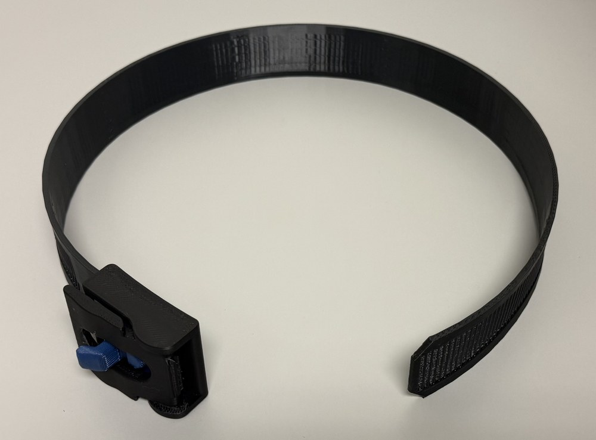
Generated a library of 10,000+ unique parametric STL files for a Phase II military logistics SBIR grant — enabling rapid point-of-care production of hardware, medical, protective, and tactical devices. Highlights include a fully FDM-printed tourniquet with zero hardware components. Also supported Phase I SBIR work generating ML training data and building reverse-engineering proof-of-concept workflows.
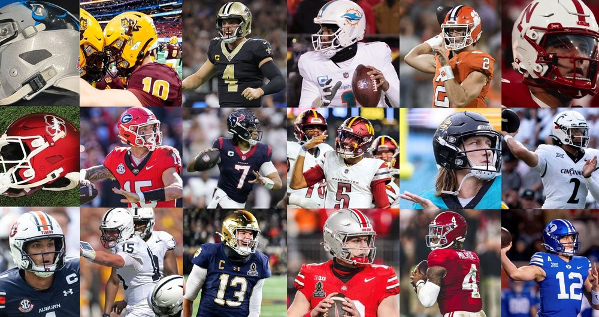
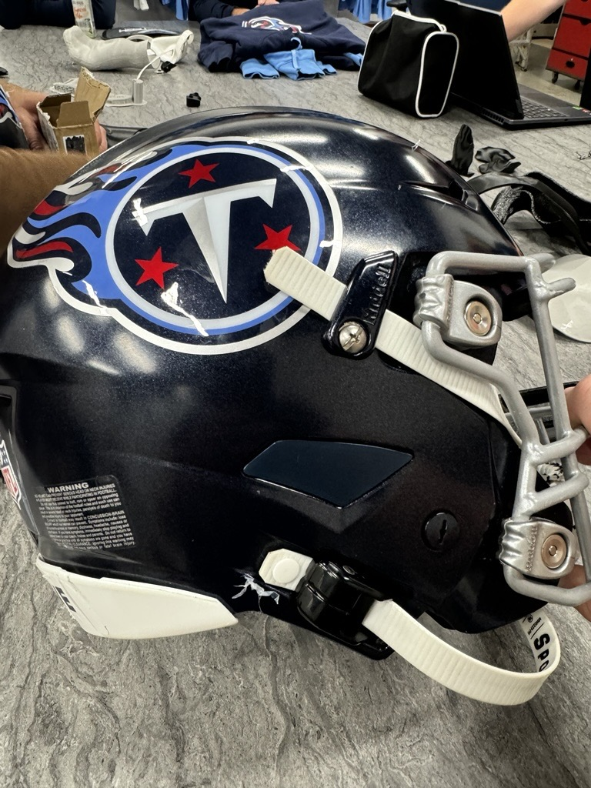
Designed a retrofit helmet accessory improving Coach-to-Player (C2P) communication — taken from concept to widespread adoption across NFL and collegiate programs, generating $100K+ in revenue.
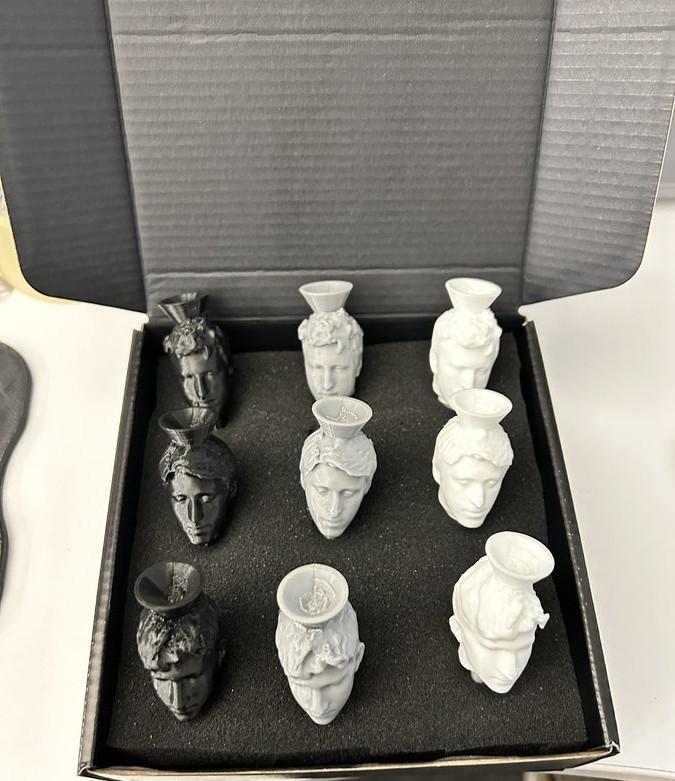
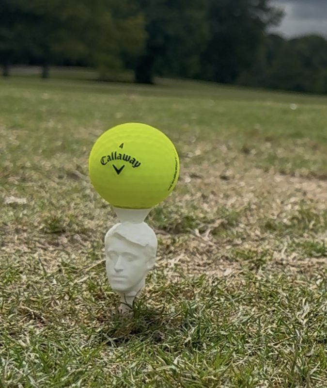
Designed a personalized golf tee using order-specific 3D scan data of each customer's head — from concept to field-validated product. Founded Easy Prints LLC, conducted market analysis to define brand positioning, and built the brand HeadGolfTees.com to bring it to market.
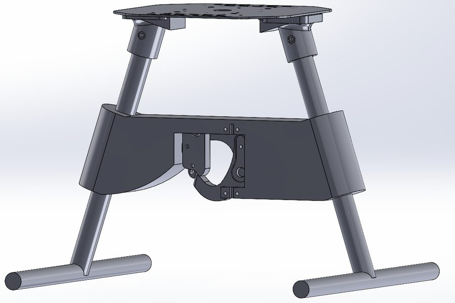
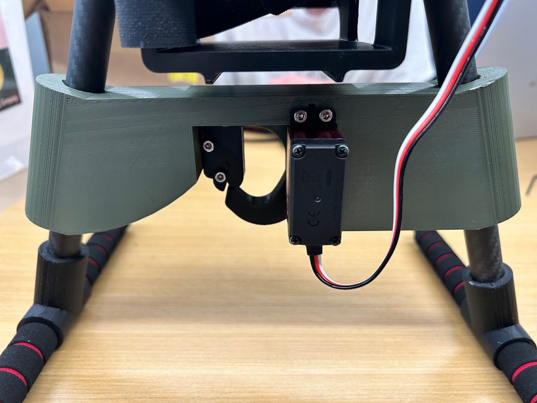
Led CAD for a servo-actuated spring-lock package release mechanism integrated into a fully autonomous delivery drone. Designed top-down to interface with the drone frame and validated via SolidWorks FEA for a 3.5 kg payload capacity.
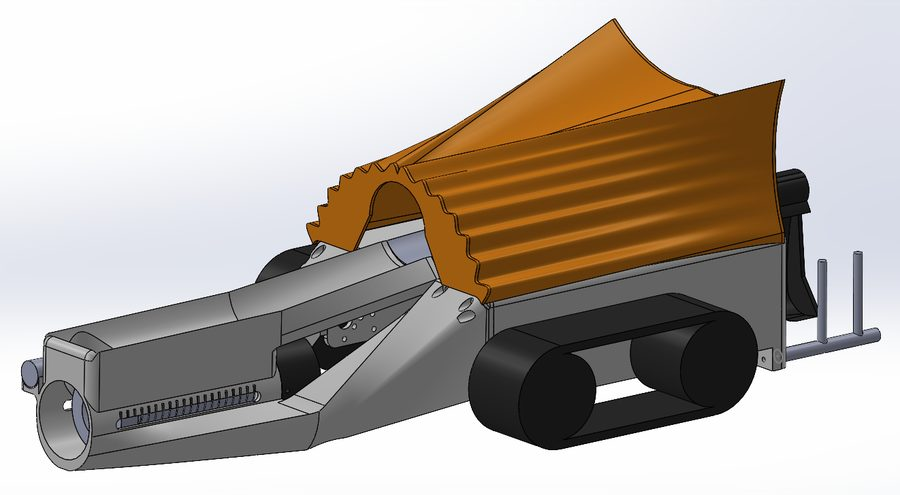
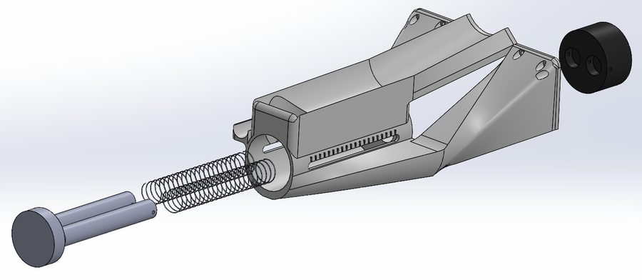
Designed and 3D printed the full mechanical system for a competitive mobile robot — tank-tracked chassis, servo-driven ball scoop, and a spring-loaded launch mechanism with servo-controlled power levels. Motion Study simulation validated ball acquisition before printing.
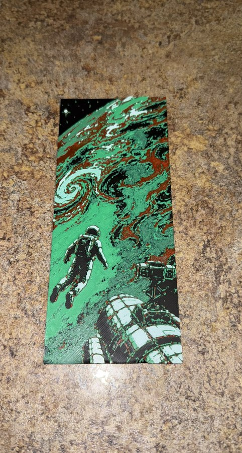
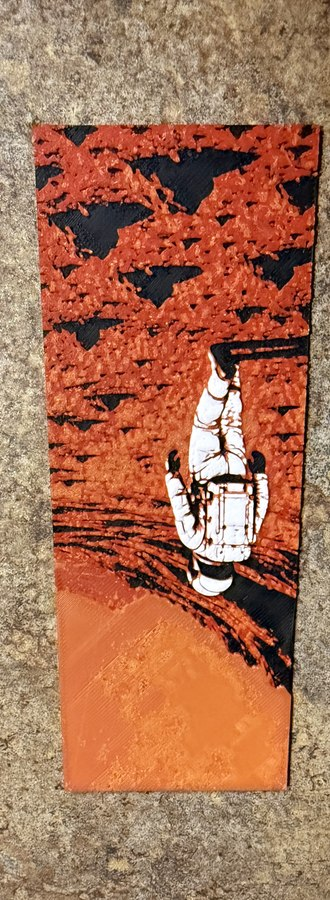
A collection of personal designs built for real problems and published for community use — from multi-filament HueForge art prints to functional everyday parts.
I'm open to full-time mechanical engineering roles in product development, medical devices, or advanced manufacturing. If you're building something interesting, I'd love to hear about it.